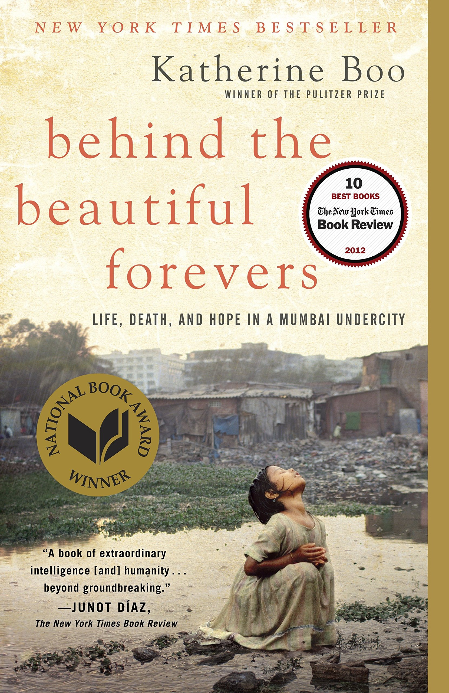

Behind the Beautiful Forevers: Life, Death, and Hope in a Mumbai Undercity is a non-fiction book written by the
Pulitzer Prize-winner Katherine Boo in 2012. It won the National Book Award and the Los Angeles Times Book Prize
among many others.[1][2] It has also been adapted into a play by David Hare in 2014, shown on National Theatre Live
in 2015.[3] The book describes a present-day slum of Mumbai, India, named Annawadi, and located near the Chhatrapati
Shivaji International Airport. It follows the interconnected lives of several residents, including a young trash
picker, a female "slumlord," and a college student.[4] The author is an American woman who often visited Mumbai with
her husband, who was from the area and had a job in the city.

Story Line
Annawadi is a slum created on land belonging to the Mumbai Airport. It was settled initially by migrant workers who
had come to work on the airport in 1991 and stayed behind. The workers reclaimed a piece of airport land that was
marshy and otherwise unusable. It quickly grew into a sprawling, densely inhabited zone of makeshift shacks, filled
primarily with recent migrants to Mumbai from all over India and Pakistan. Ethnically, it is a mixture of many
different groups and languages. Boo got to know the people there during the course of three years and in this work
writes about the daily stresses and problems that inhabitants must contend with, such as poverty, hunger, disease,
dirt, ethnic strife, violence, the constant fear that the airport authority will bulldoze their homes since they are
technically there illegally, corruption, fatigue, weather, and the interpersonal conflicts that are augmented by
being forced to live in close quarters with many others. She focuses on people such as Sunil, a stunted orphan who
is a garbage picker; Abdul, a second generation garbage picker; Fatima, an emotionally troubled woman with one leg
who dreams of a different life; Manju, who is trying to become the first female resident of Annawadi to graduate
from college, and her mother, Asha, who is trying to attain the role of "slumlord", giving her access to power,
money, and respect, but at the price of becoming part of the corruption around her. One of the central dramas around
which the book centers is the self-immolation of Fatima, who then makes a false statement to the police that it was
the fault of Abdul, his sister, and his father.